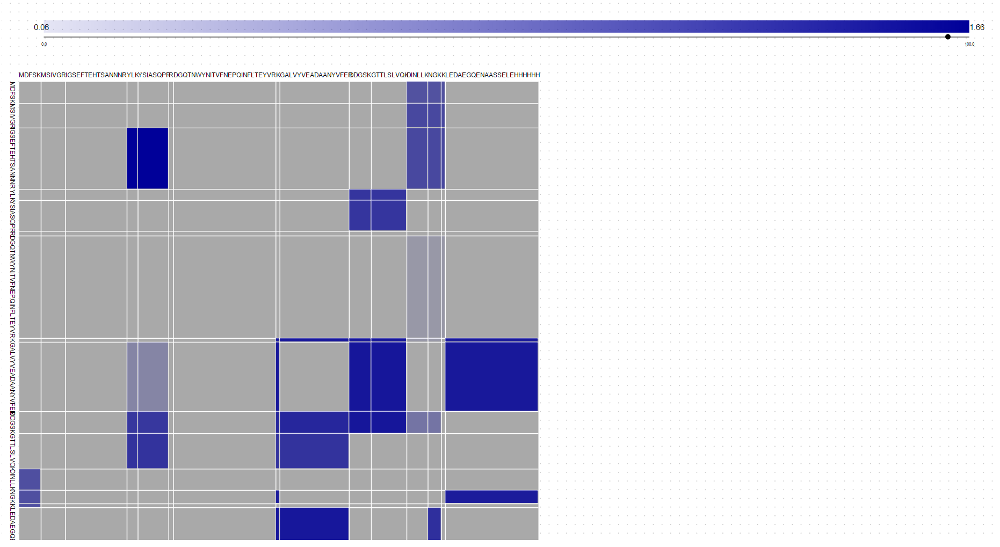
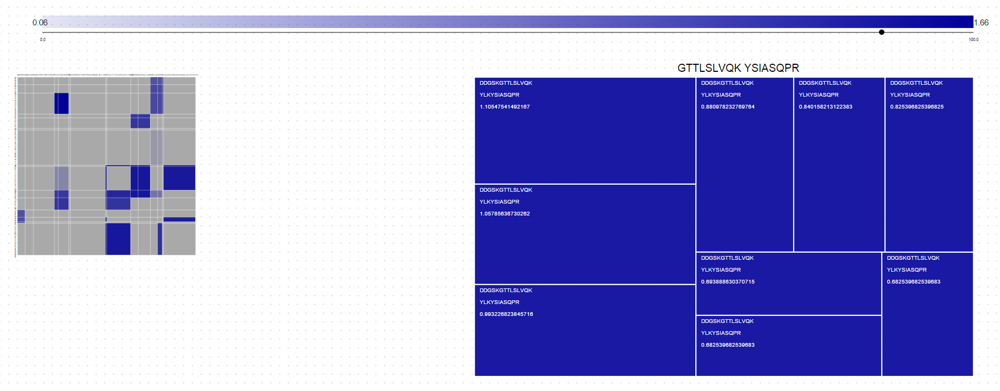
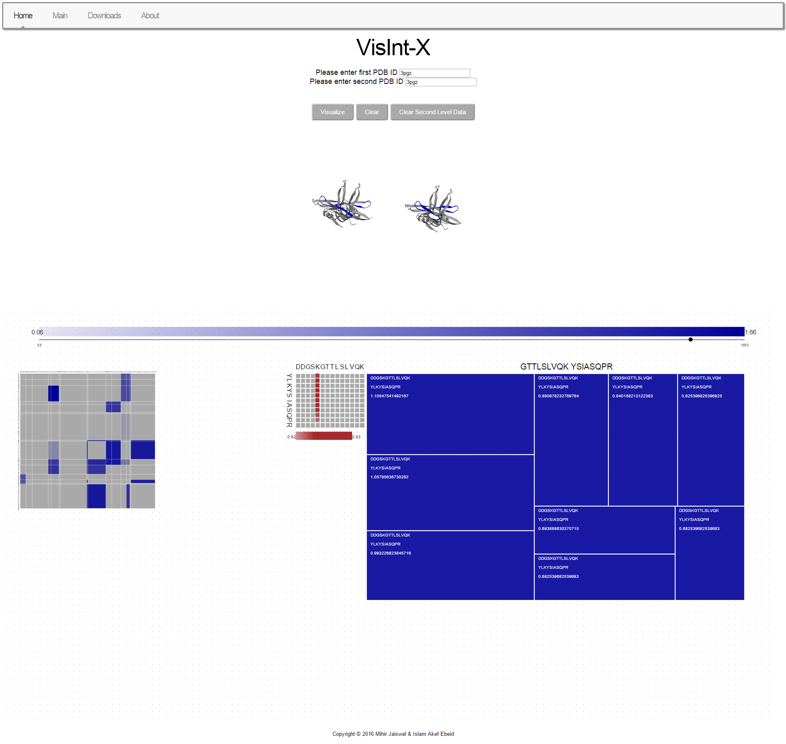
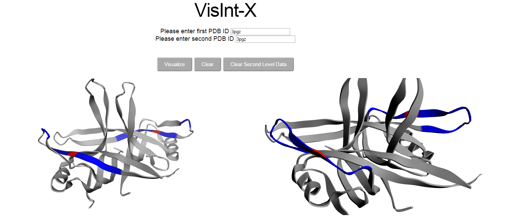

XLPM & VisInt-X: From Heavily Curated Tandem MS/MS Spectra to Multi-Scale 3D Structural Proteomics
Chemical Cross-Linking Mass Spectrometry (XL-MS) generates millions of noisy, combinatorial precursor and fragment ion spectra. XLPM (Cross-Linked Peptide Mapping) and VisInt-X exemplify the core Unity Systems engineering paradigm: pairing heavy upstream relational data curation with zero-install, multi-scale WebGL/D3 visual analytics.
In-silico Trypsin (K/R) cleavage, PTM normalization, 5 ppm precursor / 0.8 Da b/y ion matching, 14N/15N isotopic shift filtering, and Target-Decoy FDR scoring.
Drill seamlessly from the global tryptic peptide matrix (Level 1) to the MS/MS scan Treemap (Level 2) down to exact amino-acid cross-link sites (Level 3).
Clicking Level 2/3 cells dynamically maps interacting peptide chains (Blue) and exact cross-linked residues (Red) onto dual 3D crystal structures.
Curated Pipeline Specifications
- Relational Schema: xlpmwebv1 (15 MySQL Tables)
- Precursor Tolerance: 5.0 ppm (Orbitrap MS1)
- Fragment Tolerance: 0.8 Da (b/y Ion Series)
- Isotopic Labeling: 14N / 15N Heavy-Light
- Client Runtime: D3.v3 + TaffyDB + 3Dmol.js
Select a Curated XL-MS Protein Complex Benchmark
Each preset below contains pre-processed FASTA sequences, C-Score/tandem-MS cross-linking matrices from our Data/xlpm pipeline, and paired 3D Protein Data Bank (PDB) crystal structures.
Rim1 Homodimer — Pseudo-MS/MS Cross-Linking
PDB Models: 3PGZ × 3PGZYeast Mitochondrial ssDNA-Binding Protein Rim1 (Chain A × Chain B)
Curated from Orbitrap high-charge tandem MS/MS spectra (Zybaylov_103012_Rim1_03) via XLPM relational pipeline: 5 ppm precursor mass tolerance, 0.8 Da b/y fragment tolerance, trypsin K/R digestion, and variable modification normalization.
Custom File / PDB Override
Synchronized 3Dmol.js WebGL Dual-Protein Structure Viewer
Rotate (Left-drag), Zoom (Scroll), Translate (Right-drag). Baseline chains in Grey; selected Level 2 cross-linked peptides in Blue; selected Level 3 cross-linked amino acid residues in Red.
Multi-Scale D3.js Cross-Linking Matrix & Spectral Treemap Canvas
Use the top horizontal D3 brush slider to scale the Level 1 peptide matrix. Click any blue cell → Level 2 Treemap → click any treemap block → Level 3 Residue Matrix.
How the 3-Level Hierarchical Drill-Down Works

LEVEL 1 // GLOBAL MATRIXTryptic Peptide Sequence Grid
Digests both protein FASTA sequences at K/R cleavage sites. Blue cell opacity encodes the highest XLPM confidence score for each peptide pair.

LEVEL 2 // PRECURSOR TREEMAPMS/MS Precursor Scan Distribution
Clicking a Level 1 cell minimizes the matrix and renders a D3 Treemap of all MS/MS precursor scans matching that peptide pair, sized by score.

LEVEL 3 // RESIDUE MATRIXAmino-Acid Cross-Link Site Map
Clicking a Level 2 Treemap block reveals the character-by-character residue matrix (CL_SITE_SEQ_1 × CL_SITE_SEQ_2) shaded in brown by site probability.

3D WEBGL // SPATIAL MAPPING3Dmol.js Crystal Structure
Synchronizes with Level 2 & Level 3 selections to color interacting peptide chains in Blue and exact cross-linked amino acid residues in Red.